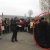
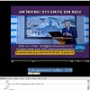

Vând apartament în bloc fără risc seismic sau urgență. Vând garsonieră în clădire care nu prezintă risc seismic. Clădirea nu se află pe lista imobilelor cu risc seismic. Sigur ai întâlnit anunțuri imobiliare formulate astfel. Cam așa arată. Sau mai rău, în asemenea hal. Dar poate nu știai că, în realitate, enunțul conține două minciuni. [...]

Camerele video în holul blocului și în alte spații comune sunt ultima găselniță a locatarilor cu veleități de securist, care, spre amurgul vieții, ajung să conducă ceva: asociația de proprietari. Sistemele de supraveghere și înregistrare video instalate în acest mod sunt adesea nu doar ilegale, ci și absolut inutile. De multe ori, printr-un efect pervers, [...]

Analfabeții funcțional sunt oameni cu școală. Au absolvit primele opt clase, poate chiar și liceul. Știu să citească, adică recunosc literele, și să scrie, adică să semneze altfel decât apăsând pe hârtie degetul înmuiat în tuș. Au televizor și urmăresc talk-show-urile de seară, bucurându-se când domnu’ Gâdea mai scapă câte o înjurătură la adresa „nenorociților [...]

Caz clasic de înșelătorie evreiască într-un bloc din Cluj! Doi locatari evrei, soț și soție, au furat ani de zile la factura electrică, punând în spinarea românilor cinstiți de pe scară cheltuielile lor nesimțite cu illuminatul. Evreii trăiau sub identități false, folosind nume românești: Ana și Alexandru Bufniță. Ghinionul lor a fost că, acum patru [...]
Proba care arată că americanii de la Chevron nu au dat mită pentru a înlesni derularea contractului de explorare a gazelor de şist în România e în videoclipul următor. Imaginile sunt filmate în “tabăra de noapte” a protestatarilor de la Pungeşti-Vaslui şi conţin mesajul cheie prin care sunt mobilizaţi localnicii la marea luptă împotriva extragerii [...]

14 ani a supravieţuit, în medie, un Imn Naţional al României. În ultimii 70 de ani, România a avut nu mai puţin de cinci imnuri de stat, cel mai rezistent dintre ele fiind, deocamdată, “Te Slăvim, Românie!” (24 de ani împliniţi, între 1953 şi 1977). Frecvenţa cu care România a înlocuit imnurile oficiale e depăşită [...]

Dacă Liviu Voinea ar fi fost Ministrul Bugetului în Bulgaria, vecinii de la sud ar fi scumpit benzina şi motorina cu 19 eurocenţi pe litru, de teamă ca nu cumva să aibă soarta crudă a … Japoniei. Dacă – Doamne fereşte – Liviu Voinea s-ar fi ocupat cu bugetul Letonei, balticii ar trebuit să taxeze [...]

Întrebat de ce s-au comportat jucătorii României ca nişte iepuri castraţi în meciul pierdut cu Grecia (1-3 la Pireu), barbugiul Victor Piţurcă a răspuns: “atitudinea o dă valoarea jucătorilor”. Infractor cu acte în regulă, de două ori condamnat definitiv la închisoare, selecţionerul reprezentativei de fotbal nu pricepe mai nimic din ceea ce i se întâmplă. [...]

Efectul Ponta a lovit necruţător în buzunarul fiecăruia şi luna trecută. În ultimul an, România a suportat deja cel mai mare val de scumpiri din Uniunea Europeană, ca rezultat direct al măsurilor luate de guvernul USL-UNPR la începutul lui 2013. Consecinţa pomenilor electorale din taxe şi impozite crescute? Majorarea anuală a preţurilor de consum e de [...]

România e pregătită pentru un cutremur major. Cele 12 avioane F-16 second-hand date la casat de Portugalia, pentru care plătim 628 de milioane de Euro, îşi vor dovedi utilitatea la următorul seism puternic, când 600 de clădiri din Bucureşti şi alte câteva mii de locuinţe din ţară se vor prăbuşi, îngropând sub moloz zeci de [...]
7,4 milioane de români se bucură că guvernul USL le fură din buzunar un salariu minim pe an, în timp ce îi prosteşte aruncându-le chifteluţe otrăvite sub formă de majorări salariale pentru bugetari şi indexări modice de pensii. 7,4 milioane de români sunt fericiţi că trăiesc mai rău! Pentru că pur şi simplu nu gândesc [...]
“Cel mai cinstit guvern pe care l-a avut România” a terminat deja de cheltuit banii altora pentru pomeni electorale şi caută cu disperare noi surse de venituri la buget. Soluţiile luate în calcul par opera unui dement. Decizia şi efectele sale După ce, la rectificarea din august 2012, a tăiat drastic fondurile destinate investiţiilor ca [...]
Senzaţional! Noul OTV e concurat de vechiul OTV, care emite din nou, în direct şi în reluare! Dan Diaconescu transmite pe frecvenţa Romit TV, un canal de limbă română cu licenţă italiană, deţinut de un ONG obscur. În plus, 2218 de telespectatori urmăresc OTV live online, în fiecare secundă. Cei 2218 de privitori pot fi [...]

Un singur cutremur, cinci televiziuni de ştiri şi o bătaie cruntă pentru audienţă. Iată cum au arătat cele câteva secunde de vagă zgâlţâială în desfăşurătoarele canalelor româneşti de ştiri. Antena 3 – cum a vrut să ne omoare Traian Băsescu Atenţie! Antena 3 e singurul post TV din România supus represiunii seismice. Pe 6 octombrie [...]